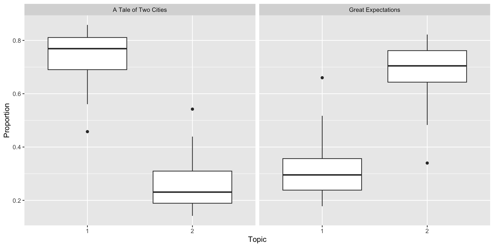

Analysis of the work by Charles Dickens
2025-12-03
Analysis of the estimates
Make up of the chapters
# A tibble: 4 × 3
document topic gamma
<chr> <int> <dbl>
1 Great Expectations_57 1 0.285
2 Great Expectations_7 1 0.185
3 Great Expectations_38 1 0.371
4 Great Expectations_17 1 0.259
Make up of the topics
# A tibble: 6 × 3
# Groups: topic [2]
topic term beta
<int> <chr> <dbl>
1 1 lorry 0.00702
2 1 hand 0.00643
3 1 defarge 0.00574
4 2 joe 0.0143
5 2 miss 0.00941
6 2 don 0.00765tidy( Dickens_LDA , matrix = "beta" ) %>%
mutate( topic = case_when( topic==1 ~ "Topic1", topic==2 ~ "Topic2") ) %>%
pivot_wider( names_from = topic, values_from = beta, values_fill = 0 ) %>%
ggplot( aes(x=Topic1, y=Topic2) ) + geom_point() +
geom_text( aes(label=term), check_overlap = TRUE, vjust=1 ) +
coord_trans( x="sqrt", y="sqrt" ) + theme_bw() +
labs( x="Term Frequency in Topic 1", y="Term Frequency in Topic 2" )